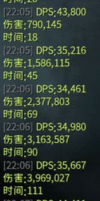
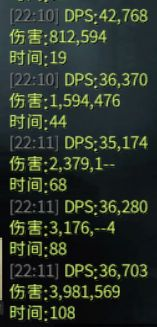
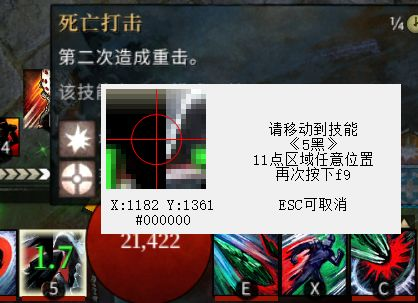
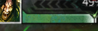
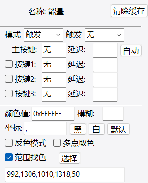
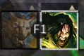
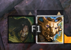
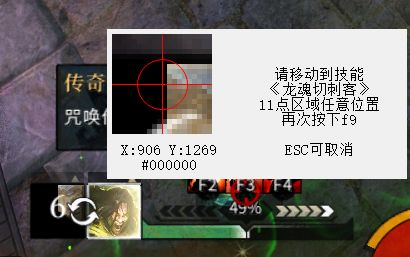
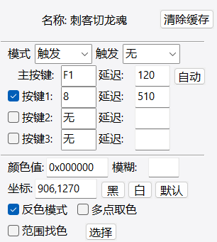
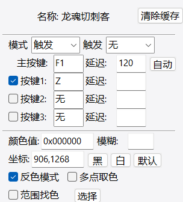

大剑、剑，龙魂使，可敏、可输出 44k-35k
大剑5，切武器|压倒优势，壁垒轰炸，剑2，剑4，剑5，2黑=4黑=5黑=切武器，壁垒轰炸>>2000=大剑2，大剑3，大剑5，2黑=3黑=5黑=切武器，冰刃怒火，能量=当前刺客=刺客切龙魂，能量=当前龙魂=龙魂切刺客，普攻||蔑视条，暗刃勇气，翠玉风暴
大剑5,5,838|切武器,`,150,2,550|压倒优势,z|壁垒轰炸,f3,601,,,,,,,,,,,,,,,,,触发,0,,0,,,11250|剑2,2,682|剑4,4,800|剑5,5,361|2黑|4黑|5黑|大剑2,2,522|大剑3,3,400|3黑|冰刃怒火,c,510|能量,,,,,,,,,,,,,1,992,1306,1010,1318,50|当前刺客|刺客切龙魂,f1,120,c,510,,,,,ifnot,,,,,,,,,,触发,0,,1|当前龙魂|龙魂切刺客,f1,120,z,,,,,,ifnot|普攻,1|蔑视条|暗刃勇气,x,510,,,,,,,,,,,,,,,,,触发,0,,1|翠玉风暴,0,880
[&DQkDLg8qPyrcEQAA1BEAACsSAAAGEgAAyhEAAAUCAAAGEisS1BEAAAAAAAACMgBaAAA=]
狂战+巨龙混搭 猎龙 等于100%暴击 武器大剑，武勇、水能 双剑，武勇，空气 潜行者古物这套循环之前有人写过，稍微修改了下


1个蛋糕，0灌注
下面主要讲取色方式
2黑=4黑=5黑 这几个就不用说了，全部取技能释放后的12点左边那个纯黑色

最好贴近12点左侧那1个点。
2、4、5分别是武器2、4、5的12点左侧黑色，就是000000那个颜色的位置。
能量=当前刺客=刺客切龙魂
能量=当前龙魂=龙魂切刺客
这2个条件是切姿态的
能量 这个是使用范围取色

框选任意姿态下的，能量低于10%的区域（不需要游戏能量低于10%）只需要框选出10%的区域区间就行。

在能量区间内找到模糊度50的白色，表示能量见底

当前刺客，F1右边任意位置取色，表示当前姿态是刺客

当前龙魂，F1右边任意位置取色，表示当前姿态是龙魂
刺客切龙魂
龙魂切刺客
这2个取色完全一样，但是跟随按键不同，注意区分。

注意，切姿态后，左侧有个倒计时的黑色，后去12点左侧那个，000000的颜色就行，并勾选反色。
表示不存在黑色，表示姿态可用。


反色表示12点那里没有黑色，说明cd已经冷却。
这2个取色坐标一样，取色好一个后，另外一个可直接复制坐标到另外的粘贴。
以上是基于小o 之前发的龙魂基础修改，基本没区别。
增加了的判断
壁垒轰炸>>2000=大剑2
壁垒轰炸剩余cd大于2秒才会用大剑2，否则可能会没有足够能量导致卡在龙魂姿态一段时间。
评论列表（35）
大佬 你这个可敏 怎么实现的啊？？
@18515226543 龙魂第三条特性，高层命令，+f4触发
只能打到3万，不知道哪里有问题，能量感觉也是不太够用。唉
@13331318912 取色有问题 三无34k
大佬，Z技能是啥，没有默认
@不落地的枫叶 龙魂切刺客，跟随压倒，刺客切龙魂，跟随冰刃
能量取了好多次都取不到模糊度50的那段，有什么技巧不？
@北烈马 这不用技巧，你不用管游戏能量，你直接取范围就行，参照物是上面那个第一个箭头左边，下面有个横杠，结尾取到那就行，然后点击白色按钮，模糊度改50。
@melis 这样啊，我取的时候没点白色，难怪
对10%能量识别还是不太理想，有时候在10%里很久（0.5s以上）也不切，有时候切了，但是晚了吃不到涌能，我精准框的0-10%区域，白色，模糊50
@IDS 实际上已经切了，只不过你切姿态技能还是冷却中，所以相当于按了没触发，你f1左侧那个切姿态图标，取色不准，没有使用12点左侧+反色，纯黑，导致没冷却完全，就出了按键+跟随，导致丢失550毫秒。
@IDS 10%还有个办法取色，不用范围，F1技能在10%以下是灰色的，你直接取色F1灰色，就代表10%以下了，然后=龙魂切刺客
@张君宝 F2技能哦，说错了
8是什么技能
@爱的色放 冰刃
刺客切龙魂跟随8 8是什么技能的呀
@.... 冰刃，你导入时候，可以看到默认按键
另外,这套比小0打的高,但是好像不能刷敏捷吧
大佬,同样报错,图片不用上传,就那几个字母Can't Load Picture ! 0/0/
目前我的解决方式是固定取8位置 范围取色输入你的坐标,然后输入白色 反色,目前执行流畅 37k 外服延迟搞正在调整全局
@圣光 已经打到43-32,我还是没明白8 是什么技能
@圣光 一会修复，这套特性3-3可以刷敏，不过要改成左侧神谕套 +饰品2个
刺客跟随龙魂的8是哪个技能
运行提示报这个：Can't Load Picture ! 0/0/
报错1次后就好了
我也是报错 不知道怎么回事
@小龙龙 传图片上来，或者右边聊天室
@melis 循环已经删了
大佬，为啥我循环到切姿态的时候就会报错啊，取色 都是跟着图片来的
@残灯孤影忆潇湘 报错的截图传一个我看看
@melis 和他们 一样 运行提示报这个：Can't Load Picture ! 0/0/
@残灯孤影忆潇湘 更新最新版
@melis 大佬 又出现新的问题了，现在不报错了，但还是不会切姿态。。
@melis 正常了，能量 没填颜色值。
@melis 大佬 现在版本 幻术时空 幻光纹章 好像不会自动释放了
@残灯孤影忆潇湘 同存在这个问题，我这里是有时放，有事一直不放，很不稳。两个电脑都这样了